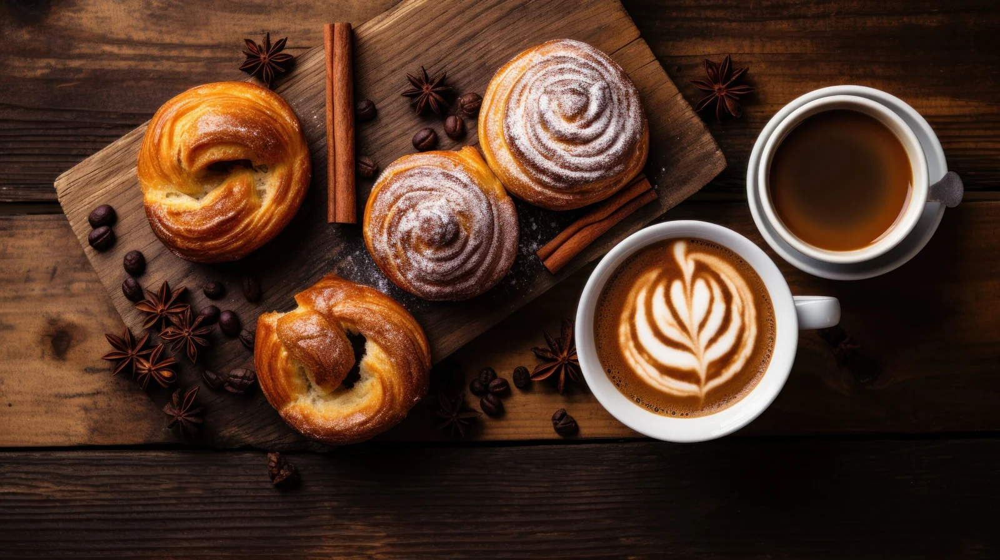

Um Lugar para
sentir o
aroma de casa
Cafés especiais, pães artesanais e receitas de família
preparados com ingredientes selecionados — para você e quem
ama.


Nossa história
Feito com amor, servido com carinho
A Canela & Café nasceu da vontade de criar um espaço onde as pessoas pudessem se sentar, respirar fundo e se sentir em casa. Em cada xícara, um cuidado especial; em cada receita, uma memória afetiva. Trabalhamos com produtores locais, grãos de origem controlada e ingredientes naturais — porque acreditamos que o sabor verdadeiro começa muito antes do preparo.
O que preparamos
Nosso Cardápio

Café Espresso
Um café forte e aromático, preparado com grãos selecionados e torrados na hora.

Café Cappuccino
Um café cremoso com leite vaporizado e uma camada de espuma de leite.

Croissant
Um croissant artesanal, crocante por fora e macio por dentro.

Croquetes
Pequenos bolinhos crocantes recheados com queijo e temperos.

Brownies
Um brownie delicioso, macio e com uma textura rica e cremosa.

Torta de Queijo
Uma torta caseira de queijo, com uma crosta crocante e um recheio cremoso.
O que dizem sobre nós
Maria Clara
Adorei o ambiente acolhedor e o café perfeito! A Canela & Café é o lugar ideal para começar o dia com energia e sabor.
João Silva
Excelente atendimento e produtos de qualidade! Recomendo a todos que buscam um lugar acolhedor e com ótimo café.
Ana Paula
O melhor café da cidade! A Canela & Café é o meu refúgio para momentos de relaxamento e prazer gastronômico.
Lucas Oliveira
Ambiente aconchegante e cardápio delicioso! A Canela & Café é o meu lugar favorito para desfrutar de um café especial.
Carla Mendes
Adoro a variedade de opções e a qualidade dos produtos! Destino perfeito para um café da manhã delicioso.
Roberto Santos
Excelente ambiente e produtos de alta qualidade! O lugar perfeito para um café especial e um momento de tranquilidade.
Entre em contato
Fale Conosco
Tem alguma dúvida, sugestão ou quer fazer uma reserva? Entre em contato conosco!